Ventajas
Una de las ventajas del código RGB es que puede reproducir casi 17 millones de colores,
además, todos estos tonos ofrecen una excelente visualización en el mundo digital.
Desventajas
El inconveniente principal es que el color resultante no se percibe tal y como lo hace el
ojo humano y puede variar dependiendo del periférico o pantalla en el que lo observemos. Los
misma cantidad de Rojo, Verde y Azul para conseguir un color puede apreciarse con
tonalidades diferentes en dos pantallas

Aplicaciones que usan RGB:
Pipette, Pixolor, Color Lab, Color RGB, Color Picker
• Modelo HSL: (Del inglés Hue Saturation Ligthness; matiz, luminosidad, saturación)
En esta ocasión las siglas no son colores, sino parámetros.
El modelo HSL es un modelo de color de los llamados cilíndricos, por el modo de
representar gráficamente las coordenadas de su gama de colores en contraposición al modelo cúbico RGB, este modelo se representa
gráficamente como un doble hexágono. Los dos vértices en el modelo HSL se corresponden con el blanco y el negro, el ángulo se
corresponde con el matiz, la distancia al eje con la saturación y la distancia al eje blanco-negro se corresponde a la luminancia.
Este modelo es más comprensible para nosotros.
Los tres parámetros son:
Parámetro H
Se traduce como “tono”, “tonalidad”, “matiz”. Representa los colores primarios (rojo,
verde, azul) con todos los matices intermedios que podemos percibir cuando los situamos en
el círculo cromático (naranjas, amarillos, morados…). Los valores de tono se refieren 3
mediante su posición en el círculo cromático. Queda normalizado que el rojo primario se
sitúa a 0º, el verde primario a 120º y el azul primario a 240º, volviendo al rojo cuando
regresamos al origen del círculo a 360º.
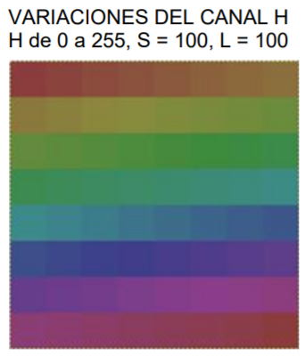
Parámetro S
El parametro H se define como el promedio entre el mayor y el menor componente de color RGB. Podríamos entenderlo como la cantidad de luz. Cualquier color al aumentar su cantidad de luz tiende al blanco. Si, por el contrario, la cantidad de luz disminuye tenderá al negro.
El rango de valores de este canal se suele referir como un porcentaje: 0% luminosidad mínima (negro) y 100% luminosidad máxima (blanco). También se puede referir como un rango de valores entre 0 y 1
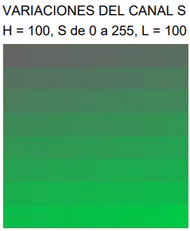
Parámetro L
Sin ambigüedades en su traducción como “saturación”. Evitando entrar en
las farragosas definiciones de los teóricos del color, podemos decir que representa la
cantidad de color. De tal manera que si cualquier color pierde saturación tiende hacia el gris.
Si la gana, se aleja del gris y gana “color”. El valor mínimo de saturación para cualquier color es el gris, mientras que el máximo es el color más puro. Este canal se suele representar como un porcentaje o un rango de valores
entre 0 y 1.
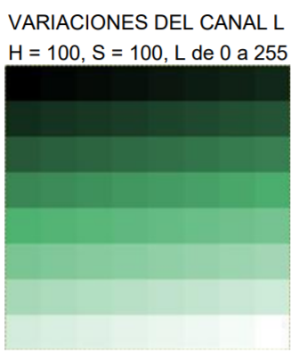

• Modelo HSV: (Del inglés Hue Saturation Value ; matiz, luminosidad, valor).
Se trata de una transformación no lineal del espacio de color RGB, y se puede usar en progresiones de color
Matiz
Se representa como un grado de ángulo cuyos valores posibles van de 0 a 360° (aunque para algunas aplicaciones se normalizan del 0 al 100%). Cada valor corresponde a un color. Ejemplos: 0 es rojo, 60 es amarillo y 120 es verde. Disponemos de 360 grados dónde se dividen los 3 colores RGB, eso da un total de 120º por color, sabiendo esto podemos recordar que el 0 es rojo RGB(1, 0, 0), 120 es verde RGB(0, 1, 0) y 240 es azul RGB(0, 0, 1). Para colores mixtos se utilizan los grados intermedios, el amarillo, RGB(1, 1, 0) está entre rojo y verde, por lo tanto 60º. Se puede observar como se sigue la secuencia de sumar 60 grados y añadir un 1 o quitar el anterior.
Diferencias modelos HSL y HSV
La diferencia entre HSV y HSL es que en HSV la saturación va del color puro al blanco, y en HSL la saturación va del color puro al gris medio, y el tono, en HSV va desde el negro al color, y en HSL va desde el negro al blanco. De ahí que HSL sea el que se utiliza más comúnmente en fotografía

Aplicaciones que usan HSV:
Apple Mac OS X system color picker (disco de color para H/S y un deslizador para V). The GIMP Xara X.
• Relación de aplicaciones y modelo de color que usan, por ejemplo: las herramientas de Adobe, el Gimp
MODELO DE COLOR DE ADOBE ACROBAT
➢ RGB
Determina el espacio de color RGB de la aplicación. En general, seleccionar Adobe RGB o RGB es mejor que elegir el perfil del dispositivo específico (por ejemplo, un perfil de monitor).
➢ CMYK
Determina el espacio de color CMYK de la aplicación. Todos los espacios de trabajo CMYK dependen del dispositivo, por lo que se basan en combinaciones reales de papel y tinta. Los espacios de trabajo CMYK que Adobe proporciona se basan en condiciones de impresión comercial estándar.
MODELO DE COLOR GIMP
Por Modos de color se entiende el sistema que nos sirve para describir los colores. En GIMP se puede trabajar en tres modos, que están indicados para imágenes cuyo destino sea una pantalla de ordenador:
RGB (Red, Green, Blue). Rojo, Verde y Azul. Escala de grises. 256 niveles de grises.
Indexado. Podemos especificar los colores con los que vamos a trabajar con un máximo de 256 colores.
• Direcciones web para la selección de colores.
➢ https://color.adobe.com/es/create/color-wheel/
➢ http://paletton.com/
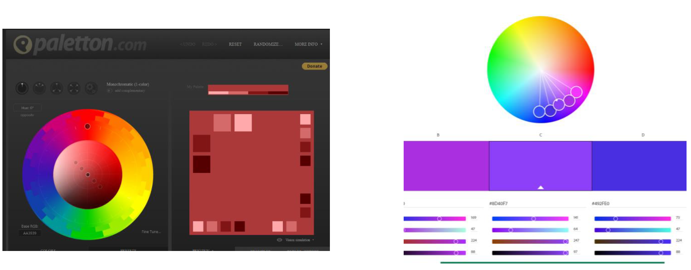
La tipografía
• Con Serif:
Son idóneas para párrafos o textos largos, ya que las serifas contribuyen a que se cree una línea imaginaria bajo el texto que facilita mucho la lectura a nuestro ojo, pero, para páginas web se recomienda por lo general sin Serif o Sans-Serif, dado que se supone que cansa menos la vista, pero con la mejora de los monitores, esto seguramente haya cambiado. Estas tipografías con Serif suelen ser concebidas como serias y tradicionales, además de contar con un aire académico.
Estas cuentan con remates o terminales, que son esos pequeños adornos ubicados en los extremos de los trazos de los caracteres. Algunos ejemplos de fuentes tipográficas Serif son: Times New Roman, Garamond o Book Antigua
• Sin Serif:
Las tipografías sin serifa o de palo seco se caracterizan por la ausencia de remates y terminales. Sus trazos apenas presentan contrastes. Estas tipografías suelen asociarse con la tipografía comercial, ya que ofrecen un resultado muy bueno para la impresión de titulares o poco texto, en carteles y publicidad. Este estilo de fuente evoca modernidad, seguridad, neutralidad y minimalismo. Esta tipografía puede resultar más legible en textos de pequeño tamaño que las que sí las tienen. Algunos ejemplos de tipografías Sin Serif son: Futura, Helvética, Arial, Gotham o Avenir.
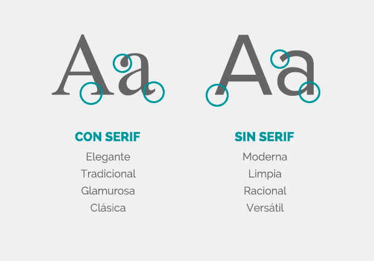
• Unidades de medida Relativa:
Las unidades relativas de CSS son aquellas que tienen en cuenta el contexto donde se encuentran. Son relativas a las dimensiones del contenedor donde se han definido. Por ejemplo %, es una unidad relativa, puesto que 30% de ancho no será lo mismo para un elemento situado dentro de un contenedor de 2000px de anchura o sobre un contenedor de 1000px de anchura.
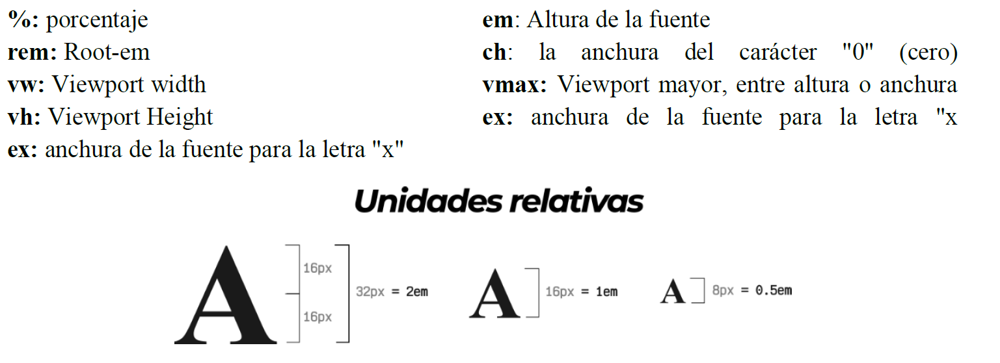
• Unidades de medida Absoluta:
Son aquellas
Son aquellas que especifican una medida en términos absolutos, sin tener en cuenta el contexto donde se están aplicando. Por ejemplo 300px (300 píxeles) es algo bastante fijo, que tendrá un valor independientemente de dónde se haya definido. 300px son siempre eso, 300px, independientemente de si tu contenedor tiene una anchura de 2000px o de 500px.
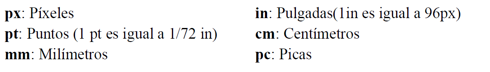
Iconos
Son elementos visuales que transmiten un mensaje y a menudo se emplean para fortalecerlo. Un ejemplo común es cuando se emplean para destacar las características de cierto producto o servicio en una página web.
➢ Iconos Planos
Los iconos planos o esquemáticos se perciben más simples y elegantes. Son especialmente recomendables cuando el tamaño o resolución en los que se
va a mostrar el icono son reducidos, o cuando se trata de símbolos cuya interpretación es arbitraria-convencional, ya que añadir detalles o realismo no
aportará o mejorará su reconocimiento o interpretación.
➢ Iconos Volumétricos
Los iconos volumétricos o con mayor realismo, en cambio, son recomendables cuando la relación representado-representación no es convencional, y
requerirá del usuario su inferencia o deducción. Otra situación es cuando lo que buscamos en el icono es que destaque o se diferencie. Por ejemplo en
el diseño del icono que identificará la propia aplicación buscamos que se diferencie de los iconos de otras aplicaciones con las que pueda compartir
espacio en pantalla.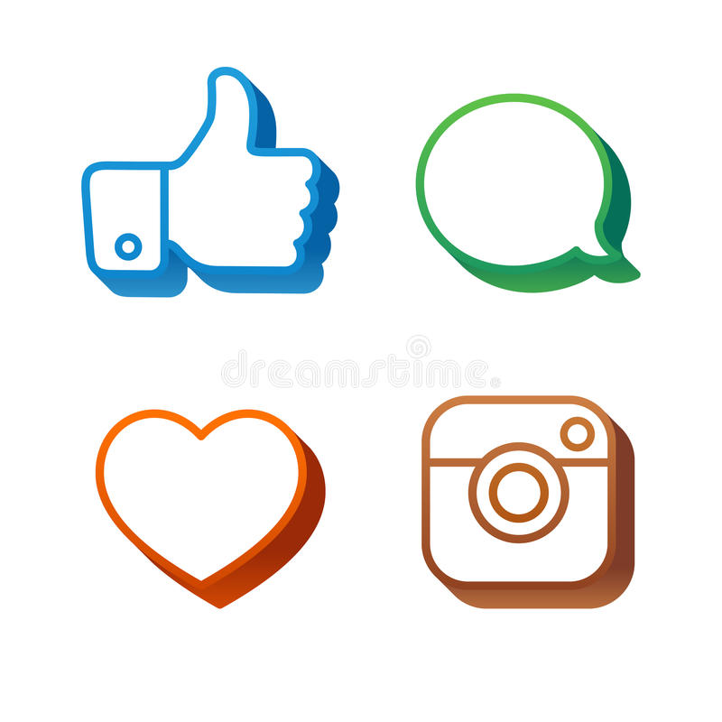
Estructura de una página web.
• Cabecera
La cabecera es la parte superior de la página web. En ella se encuentra la información básica de la empresa o marca, además
es lo primero que ven los usuarios y crea la primera impresión la cual es muy importante.
Los elementos que normalmente se encuentran en la cabecera son:
✓ El menú de navegación principal con los enlaces a las secciones de la web.
✓ La marca, logotipo o nombre de la web.
✓ El buscador de la página (en ocasiones)
✓ Una pequeña descripción (en ocasiones)
• Menú o sistema de navegación
Un menú o sistema navegación es el diagrama o estructura que organiza el contenido y dirige el flujo del usuario en tu sitio web. Este es una sección fundamental en el desarrollo de tu sitio web, desde etapas iniciales previas al diseño, así como en mejora continua.
Existen varios tipos de menús de navegación, como por ejemplo:
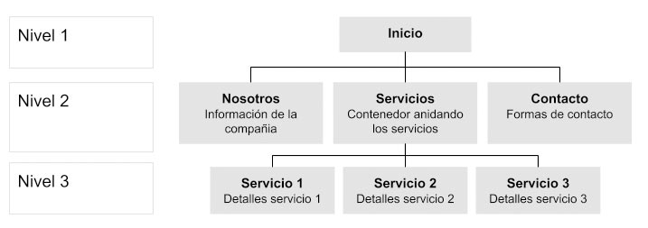
➢ Menú Desplegable
Los menús desplegables pueden contener las subcategorías, productos o servicios que cuando se pasa el puntero por el elemento este despliega las opciones y en móvil dando tap en el elemento despliega el contenido
➢ E-commerce
El menú de un e-commerce generalmente está organizado por categorías de producto donde se andan subcategorías o bien los productos directamente de modo que el nivel de profundidad del detalle de producto sea el nivel 3
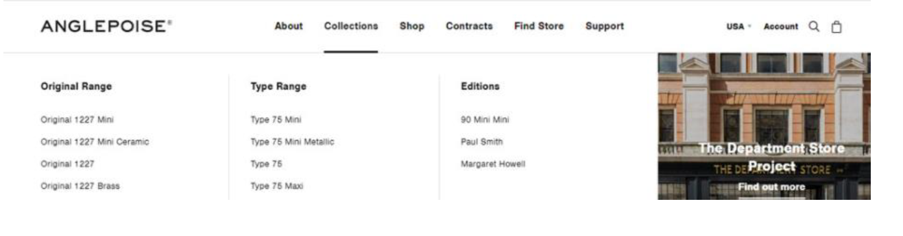
• Cuerpo de la página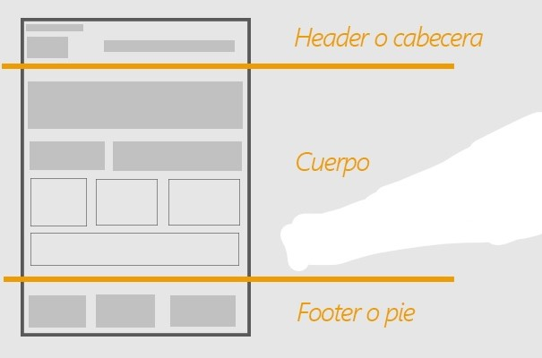
El cuerpo de la página es la parte de la interfaz web que presenta a los usuarios información específica sobre un tema concreto. Por lo tanto,individualiza frente a las demás de un sitio web. Este va a ser el escaparate donde visualizará la información que anda buscando, es por lo tanto a parte más importante de la interfaz, el espacio destinado a ella debe ser el mayor de todos, ocupando generalmente entre el 50% y el 85% del total. Su ubicación es siempre central, bajo el dintel (si lo hay) y al lado o debajo del menú lateral de navegación (si lo hay).
• Los espacios en blanco en el diseño
Son los espacios entre gráficos, columnas, imágenes, texto, márgenes, y otros elementos. Se usa para suavizar el entorno y transformar una página en algo elegante. También nos recuerda que los diseños más simples son geniales y que no necesitamos crear una pieza llena de texto y elementos gráficos para enviar un mensaje claro y directo. Aunque se le llama en diseño espacio en blanco, no significa que tenga que ser de este color, la cuestión es que esté libre de elementos como texto o imágenes. Es una forma de organizar texto, elementos y guiar la atención de los usuarios hacia ciertos lugares.
Maquetación web
• Maquetación mediante tablas y mediante capas.
Maquetar una página es colocar los contenidos de la manera que deseamos. Podría ser un sinónimo de diseñar, aunque el diseño implica realizar una creatividad o un aspecto de la página y maquetar es cuando ya tienes el aspecto definido o diseñado y lo que estás haciendo es colocar los elementos que forman parte del diseño en las posiciones que deseas.
En la actualidad la tendencia del diseño de las páginas Web es de realizar las mediante capas <div>, al contrario de lo que sucedía hace unos años, las páginas Web se diseñaban mediante tablas <table>, y en ellas se iba insertado las imágenes, textos o otras tablas, es decir, todo el contenido de la página Web, para diseñar la estructura de la página Web, esto suponía que a la hora de tener que el diseño de la página Web hacía que fuese más fácil hacer de nuevo la Web, que buscar cada uno de los elementos y etiquetas que formaban la Web.
Prototipo Web
Un prototipo web consiste en un boceto, navegable o no, que permiten crear una referencia visual de la estructura de una página web, definiendo al detalle el contenido y su distribución visual, organizando así la información a nivel de página. Gracias a su versatilidad, podrá ser empleado como plantilla para que el programador desarrolle una web.
El desarrollo del prototipo comienza con la definición de los objetivos que se quieren conseguir en la web, y con ellos crear una nueva estructura web, en forma de árbol, en la que se dará nombre a todas las categorías del menú de navegación.
Una vez esto, comenzará el diseño de wireframes o bocetos, con el fin de determinar el lugar donde situar los elementos principales de la web, pensando siempre en donde los espera encontrar el usuario.
En la fase final se realizará el prototipo navegable de toda la web, donde se verá toda la estructura de navegación, así como el diseño completo. El programador simplemente tendrá que replicarlo a través de código
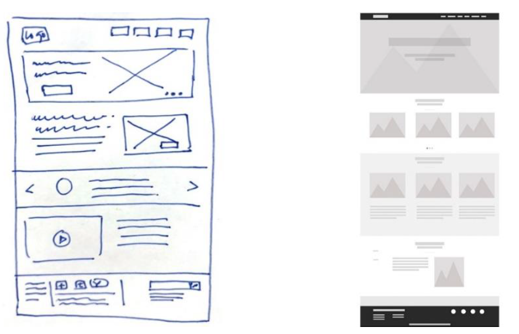
Mapa de navegación
El mapa de navegación es un esquema, que se puede pensar como un árbol jerárquico, que representa la arquitectura de las páginas de un sitio web. Esta representación puede ser, como un mapa conceptual, de forma gráfica para visualizar y entender sobre un mapa el recorrido de visitante, es decir su navegación y cómo este llega a lo que está buscando. También, en este se organiza la distribución y la jerarquía del contenido.
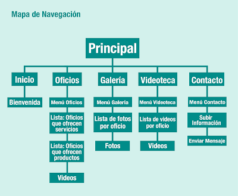
Guías de estilo
Las guías de estilo, también denominadas libros de estilo, hacen referencia en el ámbito del marketing online a los manuales para el diseño uniforme de páginas web. Aquí, además de las propias páginas web, también se engloban las cuentas en las redes sociales y las aplicaciones.
Una guía de estilo está estrechamente relacionada tanto con el diseño corporativo como con la identidad corporativa de las empresas y se encarga de que la identidad visual de la empresa en cuestión también pueda ser reconocida inmediatamente en la red.
Crear un documento que especifique la paleta de colores, la tipografía, los logos, las imágenes, los patrones, los lemas, etc., de una marca garantiza que la inversión en branding de la marca no se diluya.
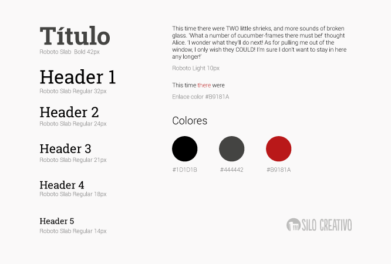
Interacción persona-ordenador
La interacción persona-ordenador (IPO), también conocida como Human-Computer Interaction (HCI) o Computer-Human Interaction (CHI), es la disciplina dedicada a estudiar cómo se produce la interacción entre las personas y los sistemas informáticos para tratar de mejorar esta relación por medio del diseño gráfico. Su objetivo principal es incrementar la productividad de los equipos y minimizar los errores al tiempo que se dota a los usuarios de una experiencia segura, confortable y satisfactoria.
La característica especial de la HCI es su enfoque interdisciplinario, que también hace uso de métodos y teorías de otros campos científicos como la psicología, la sociología y las ciencias del trabajo. Las subáreas de la HCI incluyen el e-learning y el diseño de experiencias de usuario
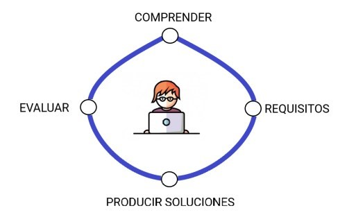